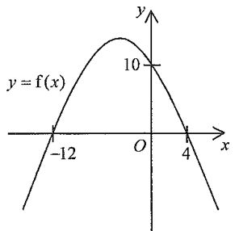

QUESTION 2017 Paper 2 · Q31
The figure below shows the graph of \(y=f(x)\).
If \(g(x)=f\!\left(\dfrac{x}{2}\right)\), which of the following may represent the graph of \(y=g(x)\)?
A. \(x\)-intercepts \(-6,\,2\); \(y\)-intercept \(5\)
B. \(x\)-intercepts \(-6,\,2\); \(y\)-intercept \(10\)
C. \(x\)-intercepts \(-24,\,8\); \(y\)-intercept \(5\)
D. \(x\)-intercepts \(-24,\,8\); \(y\)-intercept \(10\)
2 marks
Original Figure

PART (a) The original graph of \(y=f(x)\)
\(x\)-intercepts of \(y=f(x)\): \(-12,\;4\)
\(y\)-intercept of \(y=f(x)\): \(10\)
Reading the given graph directly:
STEP 11A
The curve crosses the \(x\)-axis at two points:
\[ x=-12 \quad\text{and}\quad x=4 \]
So \(f(-12)=0\) and \(f(4)=0\).
Hint: \(x\)-intercepts are where \(y=0\). Read them straight from the axis labels.
\(x\)-intercepts of \(f\): \(-12\) and \(4\)
STEP 21A
The curve crosses the \(y\)-axis (where \(x=0\)) at the point marked:
\[ f(0)=10 \]
Hint: The \(y\)-intercept never changes under a horizontal stretch, because it is the value of the function at \(x=0\).
\(y\)-intercept of \(f\): \(10\)
0 / 2
PART (b) What does \(g(x)=f\!\left(\tfrac{x}{2}\right)\) do to the graph?
\(x\)-intercepts of \(g\): \(-12,\;4\)
\(y\)-intercept of \(g\): \(10\)
Measured stretch: \(\times 1.00\)
STEP 11M
A horizontal stretch is the inverse operation inside the bracket. Writing
\[ g(x) = f\!\left(\frac{x}{2}\right) = f\!\left(\frac{1}{2}\,x\right) \]
we see the input is multiplied by \(\dfrac12\), so every \(x\)-coordinate is multiplied by \(2\).
\[ x \;\longmapsto\; 2x \]
Hint: In \(y=f(ax)\), the horizontal stretch factor is \(\dfrac{1}{a}\) (the reciprocal!), because the graph has to "reach further" for the same output.
Horizontal stretch along the \(x\)-axis by a factor \(2\).
STEP 21A
Apply the stretch to the \(x\)-intercepts:
\[ -12 \times 2 = -24, \qquad 4 \times 2 = 8 \]
So \(g(-24)=f(-12)=0\) and \(g(8)=f(4)=0\).
Hint: Roots move outward (away from the \(y\)-axis) when the graph is stretched horizontally.
\(x\)-intercepts of \(g\): \(-24\) and \(8\)
STEP 31A
For the \(y\)-intercept put \(x=0\):
\[ g(0) = f\!\left(\frac{0}{2}\right) = f(0) = 10 \]
A horizontal stretch does not change any \(y\)-value, so the \(y\)-intercept stays \(10\).
Hint: Compare with a vertical stretch \(y=2f(x)\), which would double the \(y\)-intercept to \(20\) — that is not what happens here.
\(y\)-intercept of \(g\): \(10\) (unchanged)
STEP 41A
Combine the two results:
\[ \boxed{g(x)=f\!\left(\frac{x}{2}\right)} \quad\text{gives}\quad
\begin{cases} x\text{-intercepts: } -24,\ 8 \\ y\text{-intercept: } 10 \end{cases} \]
Comparing with the options, only D matches.
Hint: Option B has the correct \(y\)-intercept but wrong \(x\)-intercepts; option C has the correct \(x\)-intercepts but wrong \(y\)-intercept.
The answer is D. \( \quad y=f(x)\ \xrightarrow{\text{enlarge along the }x\text{-axis by a factor }2}\ y=f\!\left(\dfrac{x}{2}\right)=g(x) \)
0 / 4
CHECK Which option is correct?
Tap an option to test it. The correct one will snap to the stretched curve.
A. \((-6,2)\), \(y\)-int \(5\)
B. \((-6,2)\), \(y\)-int \(10\)
C. \((-24,8)\), \(y\)-int \(5\)
D. \((-24,8)\), \(y\)-int \(10\)
SUMMARY Answers at a glance
- Original graph: \(x\)-intercepts at \(-12\) and \(4\); \(y\)-intercept at \(10\).
- Transformation: \(g(x)=f\!\left(\dfrac{x}{2}\right)\) means \(x \mapsto 2x\) — an enlargement along the \(x\)-axis by a factor \(2\).
- New \(x\)-intercepts: \(\;-12\times 2 = \mathbf{-24}\;\) and \(\;4\times 2 = \mathbf{8}\).
- New \(y\)-intercept: \(g(0)=f(0)=\mathbf{10}\) (unchanged by a horizontal stretch).
- Final answer: Option D (2 marks)